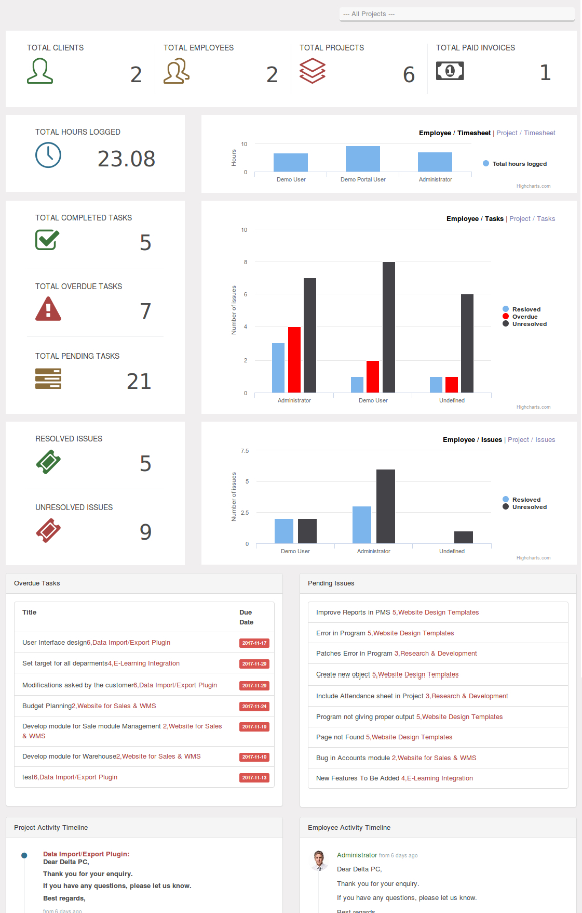

Monitor project's progress with our dashboard.
Track task status, issues and see a chart of your team progress.
A dashboard is an essential tool that provides you with an
at-a-glance overview of your project.

Note about odoo11
Odoo 11 does not have issue module so all charts related to issue is removed
Usage
Restart Odoo service and after install the module a new menu under Project menu will be added.